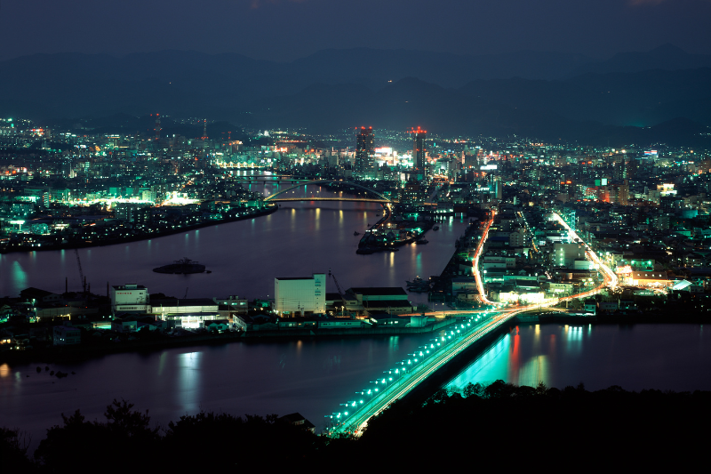

Destinations in Kerala

Beaches
Kerala's beaches, with their golden sands and swaying palm trees, offer a tranquil escape and breathtaking views of the Arabian Sea.
Learn more
Backwaters
Kerala's backwaters, a serene network of lagoons and rivers, provide a captivating glimpse into the region's lush landscapes and traditional village life.
Learn more

Heritage
Kerala's heritage is a vibrant tapestry of ancient traditions, rich cultural practices, and diverse influences, reflected in its art, architecture, and festivals.
Learn more
Hillstations
Kerala's hill stations boast stunning tea plantations and cool climates, making them perfect retreats for nature lovers and adventure seekers alike.
Learn more